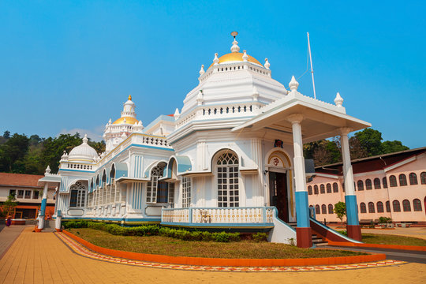

Mangeshi Temple

Mukteshwar Temple
Shri Manguesh temple is Hindu temple, located at Mangeshi Village in Priol, Ponda taluk, Goa.[1] It is at a distance of 1 km from Mardol close to Nagueshi, 21 km from Panaji the capital of Goa,[1] and 26 km from Margao. Shree Mangueshi is the Kuldeva (family deity) of Saraswat Brahmins and other gotras. Shrimad Swamiji of Shri Kavale Math is Spiritual chief Of Shri Manguesh Saunsthan, Mangueshi. This temple is one of the largest and most frequently visited temples in Goa.
From 2011, temple prescribed a dress code, to keep the sanctity of the temple premise.
History
This temple had its origins in Kushasthali Cortalim, a village in Mormugão which fell to the invading Portuguese in 1543. In the year 1560, when the Portuguese started Christian conversions in mormugao taluka, the Saraswats of Kaundinya Gotra and Vatsa Gotra moved the Mangesh Linga from the original site at the Kushasthali or Cortalim on the banks of river Aghanashini (Zuari) (Sancoale) to its present location at Mangeshi in Priol village of Atrunja Taluka, which was then ruled by the Hindu kings of Sonde of Antruz Mahal (Ponda), to be more secure
Since the time of the shifting, the temple has been rebuilt and renovated twice during the reign of the Marathas and again in the year 1890. The final renovation occurred in the year 1973 when a golden kalasha (holy vessel) was fitted atop the tallest dome of the temple
The original site was a very simple structure, and the current structure was only built under Maratha rule, some 150 years after it had been moved. The Peshwas donated the village of Mangeshi to the temple in 1739 on the suggestion of their Sardar, Shri Ramchandra Malhar Sukhtankar, who was a staunch follower of Shri Mangesh.
Just a few years after it was built, this area too fell into Portuguese hands in 1763,[5] but by now, the Portuguese had lost their initial religious zeal and had been repeatedly defeated by the Marathas and had become quite tolerant of other religions, and so, this structure remained untouched.
Deities
Main Deity
The main temple is dedicated to Bhagavan Manguesh, an incarnation of Shiva. Bhagavan Mangesh is worshipped here as Shiva linga. According to the legend, Shiva had manifested into a tiger to scare his wife Parvati.
Paravati, who was frightened at the sight of the tiger, went in search of Shiva and cried out, "Trahi Mam girisha!" (Oh Lord of Mountains, save me!). Upon hearing the words, Shiva turned himself back to his normal form. The words "mam girisha" became associated with Shiva and over time the words got abbreviated to Manguirisha or Manguesh.
He is the kuldevta of many Goud Saraswat Brahmins and saraswat brahmins
Other deities
The complex also has shrines of deities in the temple are Nandikeshvar, Gajanan, Bhagavati and the Gramapurusha Deva Sharma of the Vatsa gotra. The subsidiary shrines to the rear of the main building house Devtas like Mulakeshwsar, Virabhadra, Saanteri, Lakshminarayana, Suryanarayan, Garuda and Kala Bhairav.
Legend
The Mangesh Linga is said to have been consecrated on the mountain of Mangireesh (Mongir) on the banks of river Bhagirathi by Brahma, from where the Saraswat Brahmins brought it to Trihotrapuri in Bihar. They carried the linga to Gomantaka and settled at Mormugao, on the banks of Zuari river present day called Kushasthali (modern day Cortalim) and established their most sacred temple there.
Temple complex
The temple architecture consists of several domes, pilasters and balustrades. There is a prominent Nandi Bull and a beautiful seven-story deepstambha (lamp tower), which stands inside the temple complex in Saraswat Architectural style. The temple also has a magnificent water tank, which is believed to be the oldest part of the temple
The Sabha Griha is a spacious hall which accommodates over 500 people. The decor includes the chandeliers of the nineteenth century. The central part of the Sabha Griha leads to the Garbha Griha where the image of Mangesh is consecrated.
Rituals
Daily rituals
Like most temples in Goa, Mangueshi Temple has a large number of pujas being performed daily. Every morning, Shodshopchar pujas, namely Abhisheka, Laghurudra and Maharudra, are performed. This is followed by Maha-Aarti at noon and Panchopchar pooja at night.
Every Monday, the idol of Manguesh is taken out for a procession in the Palakhi accompanied by music before the evening Aarti.
Festivals
The annual festivals include Rama Navami, Akshaya Tritiya, Anant Vritotsava, Navaratri, Dussera, Diwali, Magha Poornima Festival (Jatrotsav) and Mahashivratri. Magha Poornima Festival begins on Magha Shukla Saptami and ends on Magha Poornima.